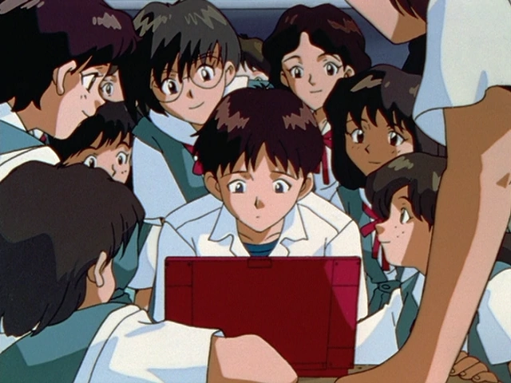

The story of Neon Genesis Evangelion primarily begins in 2000 with
the "Second Impact", a global cataclysm which almost completely
destroyed Antarctica and led to the deaths of half the human population
of Earth. The Impact is believed by the public at large and even most
of NERV to have been the impact of a meteorite landing in Antarctica,
causing devastating tsunamis and a change in the Earth's axial tilt
(leading to global climate change) and subsequent geopolitical unrest,
nuclear war (such as the nuking of Tokyo), and general economic distress.
Later, Second Impact is revealed to be the result of contact with and experimentation
on the first of what are collectively dubbed the Angels: Adam. The experiments were sponsored
by the mysterious organization SEELE, and carried out by the research organization Gehirn.
Adam's AwakeningSEELE
In the year 2010, Gehirn had accomplished a number of its scientific
and engineering goals and corporately changed into the paramilitary
organization NERV which is headquartered in Tokyo-3, a militarized
civilian city located on one of the last dry sections of Japan;
NERV's central mission is to locate the remaining Angels predicted
by SEELE, and to destroy them. However, NERV has its own secret
agenda, as directed by its Machiavellian commander Gendo Ikari:
the Human Instrumentality Project, which, according to Gendo in
episode 25, is the task of uniting all human minds into one global
spiritual entity. Associated with NERV is the Marduk Institute,
which has the task of selecting the pilots for the Evas, the most
capable being children conceived after the Second Impact (14 year-olds).
The institute consists of Commander Ikari, and NERV's chief scientist
Ritsuko Akagi; supporting the two are 108 companies which are all revealed
to be ghost companies.
The Complete Story of Neon Genesis Evangelion
Below is an episode by episode summary of Neon Genesis Evangelion, as well
as the the film, End of Evanelion. Though there are no official arcs in
Evangelion, for the sake of convenience, each episode has been split into
unnoficial arcs that basically sum up the guise of the show at that point.
If you wish view a more in depth guide into the Evangelion story, check out
the Evangelion Fandom
from which the information used in this section is directly sourced from.
The Prologue Arc
The introductary arc to Eva, primarily serves to develop the setting
and establish most of the main characters.
The year is 2015, 15 years after the first disastrous contact with
the mysterious beings known as Angels resulted in the global cataclysm
referred to as the Second Impact, which wiped out half of the human race.
To defend humanity against future Angel attacks, the United Nations
established the NERV organization in Tokyo-3 to develop giant
bio-mechanical mecha known as Evangelions. Now, the Angels have
finally returned, and the untested Evangelions can only be piloted
by specially selected 14 year olds. Shinji Ikari, estranged son of the
director of NERV, Commander Gendo Ikari, arrives in Tokyo-3 and is
dragooned into piloting Evangelion Unit-01 to fight the Angel, Sachiel,
which is attacking the city.
Shinji wakes up in the hospital, with no memory of the fight against
the Angel the night before. His father wants nothing to do with him,
so NERV's head of operations, the young and attractive Misato Katsuragi,
becomes his legal guardian. Settling in to life in Misato's apartment,
he eventually recalls the furious battle.

Shinji begins school at Tokyo-3 and meets classmates Tōji Suzuhara,
Kensuke Aida, and Hikari Horaki. Toji is angry with Shinji because
his sister was badly injured in Shinji's first fight against the
Angel Sachiel. Another Angel, Shamshel, appears, and Shinji must
defeat it. Shinji is pushed to his mental limit during the battle,
going berserk during the last seconds, engaging the Angel in close
combat and savagely disabling it. Afterwards, he is traumatized by
the emotions he experienced during the battle.
Overstressed from being made an Evangelion pilot, from the events
of the previous episode, and arguing with Misato, Shinji runs away
from home. Shinji is soon recaptured by NERV, but he quits being a
pilot. However, at the last minute Shinji does not board his train
to leave Tokyo-3 and decides to stay.
Evangelion Unit-00 is finally repaired after it went berserk during
the experiment it was in prior to the events of the first episode.
Shinji tries to get to know the pilot of Unit-00, Rei Ayanami, better
but finds that she is incredibly insular, has no friends, and all
records of her past have been erased. A new and powerful Angel arrives:
Ramiel, a floating monolithic metal diamond with a powerful particle
beam blast which nearly kills Shinji in Unit-01.
The Angel Ramiel is boring down through the upper layers of Tokyo-3
to reach NERV headquarters in the geofront below. Possessing a strong
beam attack and the strongest A.T. Field ever observed, a direct
assault by an Evangelion would meet with failure. A plan ("Operation
Yashima") is devised in which Shinji in Unit-01 will use an advanced
prototype positron rifle to shoot Ramiel from outside its target zone,
which must use the entire electrical output of Japan in order to operate,
while Rei in Unit-00 shields Unit-01. (A national promotional campaign
to conserve and redirect electricity in the wake of the 2011 Tōhoku
earthquake and tsunami was named after "Operation Yashima".)
Dr. Ritsuko Akagi, NERV's chief scientist, explains to Shinji
more of the classified real nature of Second Impact, the Angels,
and the mission of the Evangelions to defeat them. A rival organization
of NERV builds a prototype giant robot, Jet Alone, meant as an
alternative to the Evangelions, which this new robot line will
supersede. Unlike the Evangelion units, which rely on external
or limited battery power, the Jet Alone has an on-board nuclear
reactor and can thus function indefinitely without external power.
However, during the first public test of Jet Alone, it goes out
of control and starts marching toward a nearby city with its reactor
building to a meltdown. Shinji keeps the robot at bay in his Evangelion
while Misato gets inside and shuts down the reactor.
The Action Arc
These episodes introduce new characters, and generally feature a
monster-of-the-week plot structure.
Misato brings Shinji and his friends Toji and Kensuke on a flight
to a United Nations carrier battlegroup which is transporting Evangelion
Unit-02 and its fiery German pilot, Asuka Langley Soryu, to Japan.
Escorting Asuka to Japan is Misato's old flame, Ryōji Kaji. In the
middle of some awkward introductions and reunions, a massive aquatic
Angel, Gaghiel, begins attacking the fleet, and Asuka determines that
she will fight it using Unit-02, by playing "hopscotch". Unfortunately
for both due to their unfriendly meeting, she takes Shinji with her.
The Angel drags Unit-02 underwater, and Misato devises a plan to kill
it by lodging two sunken battleships in its mouth and then firing all
weapons into it. The Angel is killed, and it is revealed that both Shinji
and Asuka broke their synchronization records. Kaji is seen delivering Adam
to Gendo, and Asuka transfers to Shinji's class.
Asuka moves into Shinji and Misato's apartment where he and Misato
live. As Asuka adjusts to Japan, the Angel Israfel attacks. After
apparently being defeated, Israfel splits in to two identical copies
and defeats both Units 01 and 02. In desperation the UN takes the
drastic step of dropping an N² bomb on the Angel, temporarily disabling
it and giving NERV six days to find a way to defeat it. They determine
that both parts of the Angel must be defeated perfectly simultaneously,
so Misato puts Shinji and Asuka in a training regimen which has them
spending as much time together as possible in order to synchronize
their actions to pull off a coordinated dual attack set to a timed
dance routine. Asuka and Shinji do not take well to such close
conditions however, and the training is deemed a failure. Nevertheless,
Shinji and Asuka are able pull off the routine almost flawlessly,
destroying the Angel.
The Evangelion pilots (save for Rei) are excited about their upcoming
class trip to Okinawa Island, but they are upset to learn that they
cannot leave Tokyo-3, since they have to be on standby in case of
an Angel attack. A dormant Angel, Sandalphon, is discovered in an
embryonic stage nesting deep in the magma of an active volcano,
and in the hopes of gaining greater insight into the Angels, Asuka
is sent to capture it by lowering Unit-02 into the magma, while it
wears a special giant coolant suit for protection. However, the Angel
soon awakes and advances beyond its embryonic stage, forcing Asuka to
battle Sandalphon while deep beneath the surface of the magma.
The electrical power in Tokyo-3 is completely cut off as a result
of sabotage by parties unknown, trapping most NERV personnel inside,
and worse, trapping all three Evangelion pilots outside of the base.
A new Angel, Matarael, appears and begins to burn its way down to
NERV headquarters by using a corrosive acid attack, and everyone
inside must struggle to power up the Evangelions, as the pilots
try to make their way back into Central Dogma through a maze of
closed corridors and air ducts. The pilots then enter their Evas
and go into battle. After traversing more vents and passageways,
they come face to face with the Angel. Asuka defends Shinji and Rei
from Matarael's corrosive acid, while the other two pilots retrieve
Shinji's rifle. Shinji then uses the rifle to destroy the Angel.
A massive Angel, Sahaquiel, appears in Earth's orbit, well beyond
the reach of the Evangelions, and launching several N² bombs at it
has no effect. The Angel attacks by dropping small pieces of itself
onto Earth below, calibrating its aim: once it has zeroed in on Tokyo-3,
the main body of Sahaquiel will fall to Earth in a massive kamikaze
attack to destroy Tokyo-3. All three Evangelions are deployed at once
in a race to reach the Angel before it hits, hold it back by projecting
their own AT fields, and destroy it.
The pilots are undergoing a synchronization test directed by Ritsuko
deep within NERV headquarters when a new Angel, Ireul, appears within
the base itself, being initially mistaken for corrosion. This Angel is
actually a collection of millions of microscopic organisms, which
interact to create a living biological computer circuit. Iruel infects
NERV's computer network, and then infiltrates two of the three Magi
supercomputers that control the base before Ritsuko is able to set
up a firewall to slow its advance. Iruel is trying to trigger the
NERV base's self-destruct, which requires a unanimous vote by all
three supercomputers. Although Ritsuko's firewall slowed the advance
of Iruel's infiltration, it is gradually taking over the last supercomputer.
Ritsuko comes up with a scheme to use the Angel's rapid adaptive ability
against it and force it to evolve in to a benign state, but must race to
implement it before the Angel gains control.
The Descent Arc
A major turning point in the series, the descent arc begins the
downfall that would come to encompass much of the main cast.
The first half of this episode is a clip show, in the form of a
report by SEELE reviewing Gendo's actions, summarizing the first
season of episodes and the story up until this point. In the second
half, Ritsuko conducts an experiment to determine if pilots can be
switched between the Evangelions they normally pilot. Rei can synchronize
with Unit-01 fairly well, but when Shinji attempts to synchronize
with Unit-00, it goes violently berserk inside of the base, in a
manner identical to the failed activation test that took place before
Shinji's arrival in Tokyo-3. As before, Unit-00 attacks the hangar's
observation booth, smashing the window. However, Rei was standing at
the window instead of Gendo, as was the case in the first test, causing
Misato Katsuragi to wonder if Unit-00 was trying to kill Rei. Meanwhile,
Ritsuko feels that Unit-00 was trying to attack Ritsuko herself. At
the end of the episode, Rei uses Unit-00 to bring the Spear of Longinus
recovered from Antarctica to the deepest level of NERV's base, Terminal Dogma.
Ryoji Kaji begins to make clandestine investigations into NERV's
dark secrets, after which he, Misato, and Ritsuko attend a wedding.
Meanwhile, Rei and Shinji stay after class to clean up while Asuka
goes on a blind date. Shinji meets Gendo at his mother's grave. Later
that night, at Misato's apartment, Asuka kisses Shinji out of boredom,
nearly suffocating him. Misato finds out that Kaji is a spy, but he
shows her that NERV is hiding things from her. He shows her what he
believes to be Adam, the first Angel, which is being kept in NERV headquarters.
A new and extremely bizarre Angel, Leliel, appears in the sky over
Tokyo-3, apparently a black and white sphere. All three Evangelions
move in to attack, but Shinji's attack is useless, and he in Unit-01
is absorbed into a growing shadow that has engulfed the city. Ritsuko
determines that Leliel exists on a higher dimension of existence, which
can only be explained by mathematical concepts. The shadow on the ground,
described as being 600 meters wide but only three nanometers thick, is the
actual body of the Angel, and the sphere in the sky is its true shadow.
Fearing that Unit-01 has been completely lost, NERV prepares to drop all
of its remaining N² bombs into the Angel, hoping that this will destroy
Leliel even though it could easily kill Shinji as well. While trapped in
Leliel, Shinji goes on an introspective mental journey. As the battery
power completely drains and life support runs out in Unit-01, Shinji falls
unconscious, and a pair of glowing arms reach out to embrace him. Outside
Leliel, Misato and Ritsuko witness Unit-01 violently tear its way out of
Leliel's shadow, thereby killing it.
Disaster strikes unexpectedly when NERV-02, NERV's second branch
base in Nevada, mysteriously disappears in a flash, resulting in
the loss of everything in a radius of eighty-nine kilometers and
thousands of people. The incident coincided with an experiment to
install an S² Engine, capable of giving an Evangelion an unlimited
power supply, into Evangelion Unit-04, one of the two new Evangelions
which have recently finished construction in the United States.
Panicking after the accident involving Unit-04, the United States
government demands that Evangelion Unit-03, built in NERV-01, NERV's
first branch base in Massachusetts, be removed from its soil as
quickly as possible. As Unit-03 is about to arrive in Tokyo-3,
Toji Suzuhara becomes the new pilot for it.
Unit-03, being transported from the United States to Japan via airplane,
flies through a microscopic Angel disguised as an odd cloud, infecting
Unit-03. During Toji's first synch test, Unit-03 goes berserk and mutates
into an Angel, Bardiel. Possessing both the power of an Angel and the
form of an Evangelion, Unit-03 destroys the test facility and advances
toward Tokyo-3. All three Evangelions are sortied against Bardiel, but
the Angel rapidly defeats both Unit-02 and Unit-00. Although Shinji does
not know that Toji is trapped inside Bardiel, he refuses to use Unit-01
to attack it, wanting to try to save the pilot. As Bardiel attacks Unit-01,
Gendo orders that Shinji be cut off from control of Unit-01 and that Unit-01's
dummy plug autopilot system be activated. Under the control of the dummy plug,
Unit-01 savagely attacks Bardiel, literally tearing the possessed Evangelion
to shreds and crushing its entry plug. After the battle, the already
emotionally-devastated Shinji is even more horrified as he sees Toji being
taken from the wreckage of the entry plug.
Shinji, horrified and emotionally devastated by the battle between
Unit-01 and Bardiel and witnessing Toji's near-death, as well as
Gendo's cold indifference to the situation, quits NERV for a second
time. However, as he is leaving Tokyo-3, the Angel Zeruel appears,
and easily defeats the other Evangelions. After speaking with Kaji,
Shinji returns to NERV just before the Angel penetrates NERV Headquarters,
and engages the Angel in Unit-01. The Angel succeeds in overpowering
Unit-01 as its batteries expire, and blasts away the Evangelion's
chest armor, revealing a core identical to those of the Angels. As
the Angel attacks Unit-01's core, Shinji pleads with the Evangelion
to start working again. Unit-01 goes "berserk", re-engages and defeats
the Angel, then tears apart and eats the Angel's corpse, absorbing its
S² Engine in the process.
The Deconstruction Arc
This arc signals a complete nosedive of the characters psyche
and as a whole, sets out to encompass what Evangelion is really about
During the climax of the massive fight against the Angel Zeruel,
Shinji achieved a 400% synchronization ratio with Unit-01, a level
thought impossible. However, because of this, Shinji has merged with
the Evangelion, and his body has reverted to LCL inside the entry plug.
Over the course of thirty days, as Unit-01 stands immobile and covered
in bandages in its hangar, Ritsuko struggles to come up with a way to
restore Shinji. Meanwhile, Shinji's consciousness goes on an introspective
odyssey while merged with Unit-01 in which he comes into contact with
the soul of his mother, Yui Ikari. After speaking with Yui, Shinji is
"reborn" from Unit-01's exposed core. Later that evening, Misato and
Kaji resume their love affair, which disturbs and angers Ritsuko.
Deputy Commander Kozo Fuyutsuki is kidnapped and interrogated by SEELE,
who are outraged that in its last battle Unit-01 absorbed the S² engine
from an Angel into its body, so that it no longer requires an external
power source and can now function indefinitely. Meanwhile, Kaji goes AWOL
to try to find out the truth about NERV. As Fuyutsuki is interrogated by
SEELE, he recounts in flashbacks how he first met Gendo, Yui, the dark
events surrounding Second Impact, and how NERV and the Evangelion project
were born. Flashbacks also reveal the history of Misato, Ritsuko, and Rei.
After being defeated yet again by an Angel, Asuka's synchronization
ratio continues to drop, affecting her ability to pilot Unit-02.
Flashbacks reveal Asuka's tragic childhood, which shaped her current
abrasive personality. A new Angel, Arael, appears in Earth's orbit,
well outside the range of any Earth-based weaponry, including the
Evangelions. Asuka is told that she will be Rei's backup for the
confrontation with the Angel. Infuriated, she launches herself and
confronts Arael on her own, however Arael uses a telepathic attack
which forces Asuka to relive traumatic events from her past, causing
such mental distress that Asuka completely loses synchronization and
Unit-02 shuts down. Gendo orders Rei to go to Terminal Dogma, retrieve
the Spear of Longinus, and use it against the Angel. The Lance succeeds
in penetrating Arael's A.T. Field and destroys it, but the Lance achieves
escape velocity and enters a lunar orbit. Asuka is again angered by her
defeat, worsened by her hatred of Rei.
Following the last Angel's assault on her mind, Asuka sinks into
clinical depression. The next Angel, Armisael attacks, and attempts
to merge itself with Unit-00, causing it to make contact with Rei's
mind, as past Angels did with Shinji and Asuka. In order to save Shinji,
Rei self-destructs Unit-00 in order to destroy Armisael. Rei is revealed
to be "recovered" after a supposed near-death experience. Misato forces
Ritsuko to reveal to her, as well as Shinji, the dark secrets of NERV
and the true nature of Rei.
As Asuka's depression has grown to the point that she is reduced
to catatonia, SEELE sends Kaworu Nagisa to NERV in order to be the
replacement pilot for Unit-02. At first Shinji and Kaworu bond and
quickly become friends. However, it is soon revealed that Kaworu is
in fact the final Angel and has been sent to merge with Adam in Terminal
Dogma at the bottom level of NERV headquarters. Kaworu commandeers Unit-02,
and Shinji engages it with Unit-01 in a fierce fight while in free-fall as
they descend to Terminal Dogma. Kaworu reaches the Angel in Terminal
Dogma as Shinji defeats Unit-02, but realizes that the Angel is not
Adam but Lilith. Realizing it is the way things are meant to be, he
then implores Shinji to kill him to prevent humanity from being destroyed.
Shinji hesitates, but finally kills Kaworu. Later, traumatized by the day's
events, Shinji tries to talk to Misato, but she is too distracted by her
own struggles to be of comfort to him.
The Human Instrumentality Project begins, merging the souls of humankind
into a single entity. Shinji, Rei, Misato, and Asuka struggle with their
reasons for existence. Shinji discovers that he has created a solitary
existence for himself, a world in which he alone can exist.
The Human Instrumentality Project continues as humankind attempts
to complete its existence. Shinji continues to struggle with the
impact of his personal existence, and eventually views a world
(resembling a light-hearted, comedic high school setting) in which
he is not an Evangelion pilot. Shinji, now understanding that his
existence is not fixed, destroys the constrictive shell which he
had formed around himself. He is met by all of the other characters
from the series, who applaud and congratulate him, and, in response,
he thanks them all.
The End of Evangelion
The End of Evangelion is a 1997 Japanese animated film written and
directed by Hideaki Anno along with Kazuya Tsurumaki. It is a movie
based on Episodes 25' and 26' which were alternate versions of 25 and 26.
First half of the film The End of Evangelion
With the Angels defeated, Commander Gendo Ikari and SEELE finally
break their relationship and Gendo attempts to start Third Impact
with Rei and the Angel Lilith in Terminal Dogma. SEELE orders the
Japanese Strategic Self Defense Forces (JSSDF) to attack Tokyo-3
and NERV headquarters, culminating in vaporizing Tokyo-3 with an
N² mine. Asuka uses Unit-02 to repulse the JSSDF's attack on NERV,
prompting SEELE to retaliate by sending in the nine Mass Production
Evangelions, Units 05 through 13, to fight Unit-02. Meanwhile, Misato
rescues Shinji from advancing JSSDF troops and brings him safely to
Unit-01, but is mortally wounded. Ritsuko tries to initiate NERV HQ's
self-destruct as an act of petty revenge against Gendo, but it doesn't
work, at which point Gendo fatally shoots her. In a spectacular heated
battle, a reawakened Asuka is able to defeat all of the MP Evangelions,
but Unit-02's batteries run out, and the MP Evangelions reactivate despite
their wounds because they are fitted with S² engines. The MP Evangelions
proceed to eviscerate Unit-02. Shinji leaves the Geofront in Unit-01 and,
upon seeing the remains of Unit-02, loses his last hold on sanity.
Second half of the film The End of Evangelion
Gendo starts Third Impact with Rei, but she rejects Gendo and merges
with Lilith to become a god-like being. The MP Evangelions crucify Unit-01
with their Lance of Longinus replicas, and centering around the Rei/Lilith
being create an Anti A.T. Field which spreads over the entire world, reducing
everyone to the primordial ooze of LCL, merging into a single super-being
as all souls merge. In a surreal sequence (in which Shinji imagines himself
in different scenarios interacting with the people he has come to know
and care about during his time as an Eva pilot), Shinji examines his life's
meaning with Rei and what he truly wants, and after talking with the soul
of his mother in Unit-01, decides to reject Instrumentality, accepting
individual existence and the possibility of pain over the painless loss
of identity. He is told all living things will have the choice of
returning to individual existence, if they can remember it. The Rei/Lilith
being and the MP Evangelions die. In the end, Shinji wakes up on the beach
of the Sea of LCL, which has formed over Earth, and finds that Asuka is
lying next to him, inexplicably alive, her injuries sustained during her
attle with the Mass-Produced Evas covered in bandages. Shinji, still in an
emotionally fragile state, chokes the seemingly catatonic Asuka, but stops
himself when she reaches up her bandaged arm to touch his cheek. He then breaks
down completely, sobbing uncontrollably as he hunches over her. Asuka
looks at the sky for several moments before turning her gaze towards
the weeping Shinji. Regarding him coldly with her one good eye, she
faintly mutters "How disgusting.". The story ends at this point, with
the message "Fin" appearing at the bottom of the screen, leaving the
fates of Shinji, Asuka, and the rest of humanity unresolved.